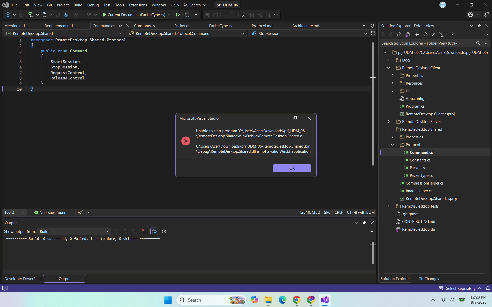
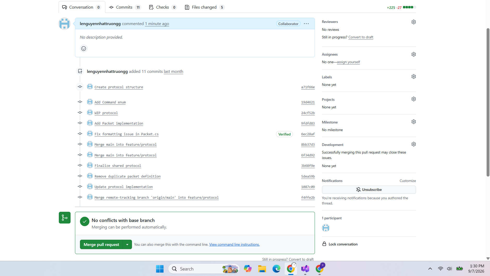

Ứng Dụng Điều Khiển / Truyền File Socket Client-Server (Remote Desktop)
Tổng quan bài toán: Ứng dụng điều khiển máy tính từ xa hoạt động theo mô hình Client - Server qua TCP/IP Socket. Hệ thống truyền phát luồng ảnh chụp màn hình desktop và điều phối sự kiện chuột, bàn phím theo thời gian thực.
Quy mô nhóm: Nhóm 6 thành viên (Môn Lập trình Mạng UTH).

🖥️ Giao diện Socket Client-Server 💻 C# Buffer Stream & Task.Run
💻 C# Buffer Stream & Task.Run

🐙 GitHub PR #11 CommitsKhó khăn kỹ thuật (Challenges): Hiện tượng nghẽn luồng giao diện WinForms (Thread Blocking) và trôi/mất đồng bộ byte khi truyền nhận liên tục luồng stream ảnh màn hình ở tần số cao.
Giải pháp kiến trúc (Solutions): Tách biệt hoàn toàn luồng nhận dữ liệu mạng (Network Worker Thread) và luồng giao diện thông qua cơ chế Invoke, áp dụng Header Length Framing cùng cơ chế bắt tay xác thực ACK kiểm tra tính toàn vẹn của mảng byte.